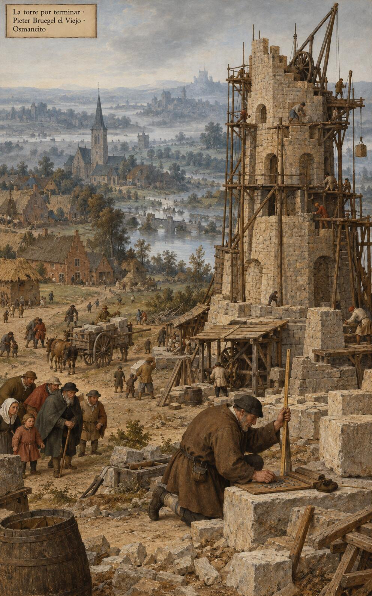
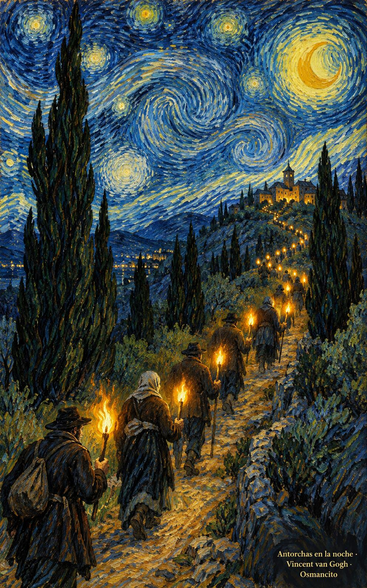
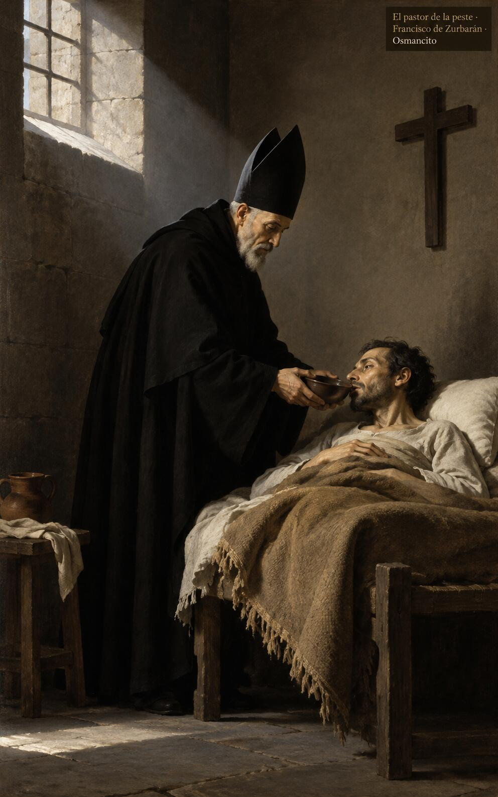

4 de noviembre de 2026
¡Buenos días!
Antorchas en el mundo
25
El Señor es mi luz y mi salvación, ¿a quién voy a tenerle miedo?
Salmo 26,1. Fuente
Que trabajemos por nuestra salvación con humildad, sin quejas ni discusiones, sencillos y sin mancha en medio de este tiempo. Que antes de levantar la torre contemos las piedras y el costo, y antes de seguirlo calculemos qué dejamos: padre, madre, bienes, la propia vida. Que carguemos la cruz de cada día sin miedo, porque el Señor es nuestra luz y nuestra salvación, y brillemos como antorchas en la noche del mundo que las necesita.

- El hombre arrodillado cuenta las piedras junto a la torre a medio construir: Lucas 14 pide calcular el costo antes de empezar.

- Los caminantes suben de noche llevando cada uno su llama: Filipenses 2, brillarán como antorchas en el mundo.
¡Feliz miércoles 4 de noviembre!
😊🙋♂
San Carlos Borromeo, obispo
Que la memoria de Carlos Borromeo nos enseñe a servir sin ruido: un pastor que visitó a los enfermos de la peste cuando otros huían, y gastó su vida corrigiendo con ternura lo torcido. Que cuidemos a los pequeños como él cuidó a los sembradores de la palabra. Que no nos pese darlo todo, porque quien brilla como antorcha no guarda la luz para sí, sino que la reparte hasta quedarse en nada y feliz.

- El obispo da de beber al enfermo en el catre pobre: Carlos Borromeo sirvió a los suyos cuando otros huían.
¡Feliz memoria de san Carlos Borromeo!
© 2026 Osmancito